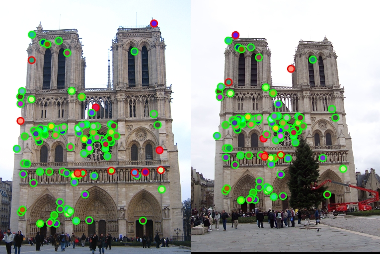

Project 2: Local Feature Matching
The goal of this assignment is to create a local feature matching algorithm. This assignment is divided into three parts. In the first part, we detect the interest points in an image using a function get_interest_points(). In the second part, we carry out local feature description using a function get_features().The third part does the feature matching using a function match_features().
Feature detection is a low-level image processing operation. It is the act of identifying image points, curves, or regions that are used to make local decisions of some kind. Feature Matching is the operation carried out to find common features in two images with possibly different scale, orientation, illumination etc. This has applications in image alignment (eg. panorama mosaics), robot navigation, face detection, etc.
Part 1: Interest point detection
Interest point detection refers to the detection of interest points for subsequent processing. An interest point is a point in an image which has a well-defined position in image space and is stable under local and global perturbations in the image domain such as illumination variations. The local image structure around the interest point is rich in terms of local information contents, such that the use of interest points simplify further processing in the vision system.
As part of this project, I have implemented the get_interest_points() function in the get_interest_points.m file. The threshold value is not fixed, but computed. The value of alpha was varied and experimented and the optimum result was obtained for alpha=0.09. The algorithm of the project is as follows:
Algorithm with code snippets
- Take derivatives of a Gaussian filter.
- Compute horizontal and vertical derivatives of the image Ix and Iy by convolving image with Gaussian derivatives.
- Compute the three images: Ixx, Iyy, Ixy
- Convolve each of the three images with a large Gaussian filter.
- Compute a scalar interest measure.
- Find local maxima above a certain threshold and report them as detected feature point locations.
- A 4x4 grid of cells, each feature_width/4.
- Each cell has a histogram of the local distribution of gradients in 8 orientations. Appending these histograms together givea 4 x 4 x 8 = 128 dimensions.
- Each feature vector is normalized to unit length.
- Take derivatives of Gaussian filter.
- Calculate image derivatives Ix and Iy.
- Calculate magnitude and direction.
- Process each interest point.
- Normalize the feature vector.
- Take the 2 feature vectors (feature1 and feature2) and caculate pairwise distance. I did this using pdist2().
- Sort mtrix and retain euclidean distances and indices.
- Find the nearest neighbors as NN1 and NN2. I divide NN2 over NN1 and then compute 1/confidences later.
- Create a vector to hold sorted euclidean distances and their indices for filtered confidences.
- Truncate and sort the confidences in descending order.
- Return the top 100 matches.
- PCA
- KD-tree implementation
Small_Gaussian=fspecial('gaussian',3,1);
Large_Gaussian=fspecial('gaussian',9,2);
%derivatives of Gaussian
[gx,gy]=gradient(Small_Gaussian);
%horizontal and vertical derivatives of image Ix and Iy by convolving original image with derivatives of Gaussian
Ix=imfilter(image,gx);
Iy=imfilter(image,gy);
%computing Ixx, Iyy, IxIy
Ixx=Ix.*Ix;
Iyy=Iy.*Iy;
Ixy=Ix.*Iy;
%convolving each image with a larger Gaussian
G_Ixx=imfilter(Ixx,Large_Gaussian);
G_Iyy=imfilter(Iyy,Large_Gaussian);
G_IxIy=imfilter(Ixy,Large_Gaussian);
%harris detector
alpha=0.09;
det=(G_Ixx.*G_Iyy)-(G_IxIy.*G_IxIy);
trace=G_Ixx+G_Iyy;
har=det-alpha.*(trace.*trace);
R=har;
R(1:feature_width,:)=0;
R(end-feature_width:end,:)=0;
R(:,1:feature_width)=0;
R(:,end-feature_width:end)=0;
Max=max(max(R));
threshold=R>(Max/1000);
R=R.*threshold;
max_R=colfilt(R,[feature_width/2 feature_width/2],'sliding',@max);
R=R.*(R==max_R); % only keep max
[y,x]=find(R>0);
confidence=R(R>0);
Part 2: Local feature description
Feature detection refers to methods that aim at computing abstractions of image information and making local decisions at every image point whether there is an image feature of a given type at that point or not. It is a low-level image processing operation.
In this project, we implement the scale-invariant feature transform (SIFT), which is an algorithm in computer vision to detect and describe local features in images. The key properties that the descriptor has are:
In this project, I applied derivatives of the Gaussian filter to the image to calculate Ix and Iy. These values were then used to calculate magnitude and direction. The functioning of SIFT has been imitated and finally the feature vector has been normalized to unit length.
Algorithm with code snippets
...%Gaussian derivatives are applied to image
% Calculate magnitude and direction
magnitude=sqrt((Ix.*Ix)+(Iy.*Iy));
direction=mod(round(atan2(Iy,Ix)/(pi/4)),8);
for int_pt=1:length(x)
x_mid=x(int_pt);
y_mid=y(int_pt);
%Create margins for grid
grid=fw/4;
x_margin=x_mid-grid*2;
y_margin=y_mid-grid*2;
Mag=magnitude(y_margin:y_margin+fw-1,x_margin:x_margin+fw-1);
Dir=direction(y_margin:y_margin+fw-1,x_margin:x_margin+fw-1);
gf2=fspecial('gaussian',fw,fw/2);
Mag=imfilter(Mag,gf2);
for i=0:3
for j=0:3
new_Dir=Dir((grid*i+1):(grid*i+grid),(grid*j+1):(grid*j+grid));
new_Mag=Mag((grid*i+1):(grid*i+grid),(grid*j+1):(grid*j+grid));
for k=0:7
win=(new_Dir==k);
features(int_pt,(i*32+j*8)+k+1)=sum(sum(new_Mag(win)));
end
end
end
% Normalization as mentioned in Szeliski
MagSum=sum(features(int_pt,:));
features(int_pt,:)=features(int_pt,:)/MagSum;
end
Part 3: Feature matching
Now that we have extracted features and their descriptors from a pair of images, we try to establish feature matches in the pair. Feature Matching is the operation carried out to find common features in two images with possibly different scale, orientation, illumination etc. This has applications in image alignment (eg. panorama mosaics), robot navigation, face detection, etc. Descriptors can be matched using the distance measures.
In this project, I use the Euclidean distance measure, which is the simplest form of distance measure. The features are then sorted based on their distance. The confidences are calculated based on the nearest and second nearest neighbor. The matches are then sorted again in descending order, so that the most confident onces are at the top of the list. My code works for the 100 most confident matches.
Algorithm with code snippets
Dist=pdist2(features1,features2,'euclidean'); %pdist() generates pairwise distance
[B,I]=sort(Dist,2);
NN1=B(:,1);
NN2=B(:,2);
confidences=NN1./NN2;
i=find(confidences);
s=size(i);
matches=zeros(s(1),2);
matches(:,1)=i;
matches(:,2)=I(i);
confidences=1./confidences(i);
[confidences,ind]=sort(confidences,'descend');
matches=matches(ind,:);
matches=matches(1:100,:);
Results in a table
|

Notre-Dame (89% accuracy) |

Mount Rushmore (100% accuracy) |

Episcopal Gaudi (6% accuracy) |
Extra: Bells and Whistles
I tried modifying the match_features() function in the following 2 ways:
PCA stands for Principle Component Analysis. Its goal is to extract the important information, to represent it as a set of new orthogonal variables called principal components, and to display the pattern of similarity of the observations and of the variables as points. In this implementation, I create a lower dimensional descriptor that is still accurate enough. Descriptor is 64 dimensions instead of 128 dimensions, although the accuracy decreased by a small amount.
Using PCA, I got the following accuracy for the images for various distance measures:
1. Notre-Dame:
(a) Euclidean: 82%
(b) Minkowski: 82%
(c) Chebychev: 60%
(d) Cityblock: 88%
2. Mount Rushmore:
(a) Euclidean: 88%
(b) Minkowski: 88%
(c) Chebychev: 54%
(d) Cityblock: 92%
3. Episcopal Gaudi:
(a) Euclidean: 1%
(b) Minkowski: 1%
(c) Chebychev: 1%
(d) Cityblock: 0%
A k-dimensional tree s a space-partitioning data structure for organizing points in a k-dimensional space. It aids in carrying out the knn_search between the feature vectors in the feature matching function.
Using kd-tree, I got the following accuracy for the images for various distance measures:
1. Notre-Dame:
(a) Euclidean: 89%
(b) Minkowski: 89%
(c) Chebychev: 81%
(d) Cityblock: 92%
2. Mount Rushmore:
(a) Euclidean: 100%
(b) Minkowski: 100%
(c) Chebychev: 92%
(d) Cityblock: 100%
3. Episcopal Gaudi:
(a) Euclidean: 6%
(b) Minkowski: 6%
(c) Chebychev: 5%
(d) Cityblock: 7%
Takeaways
1. Episcopal Gaudi has the worst accuracy irrespective of the method implemented. This could be due to variance in image scale or illumination.
2. Euclidean and minkowski distance measures always produced the same results for me.
3. Cityblock distance measure almost always gave the highest accuracy.